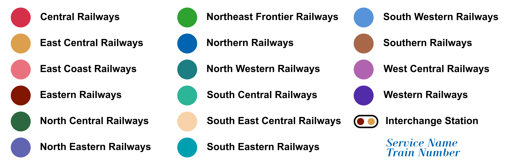
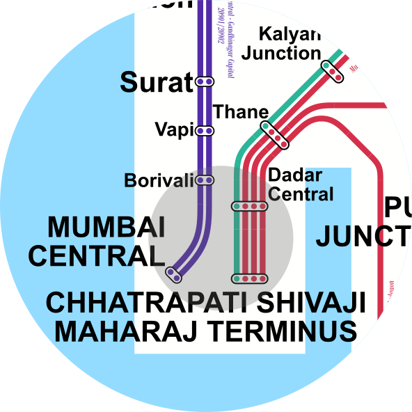
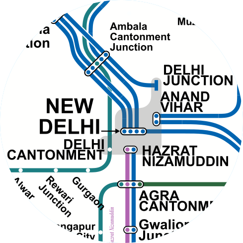
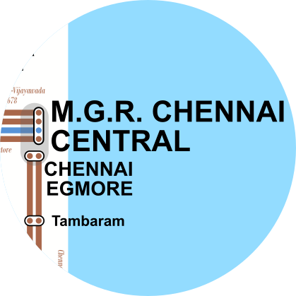
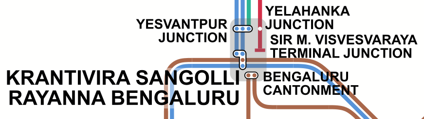
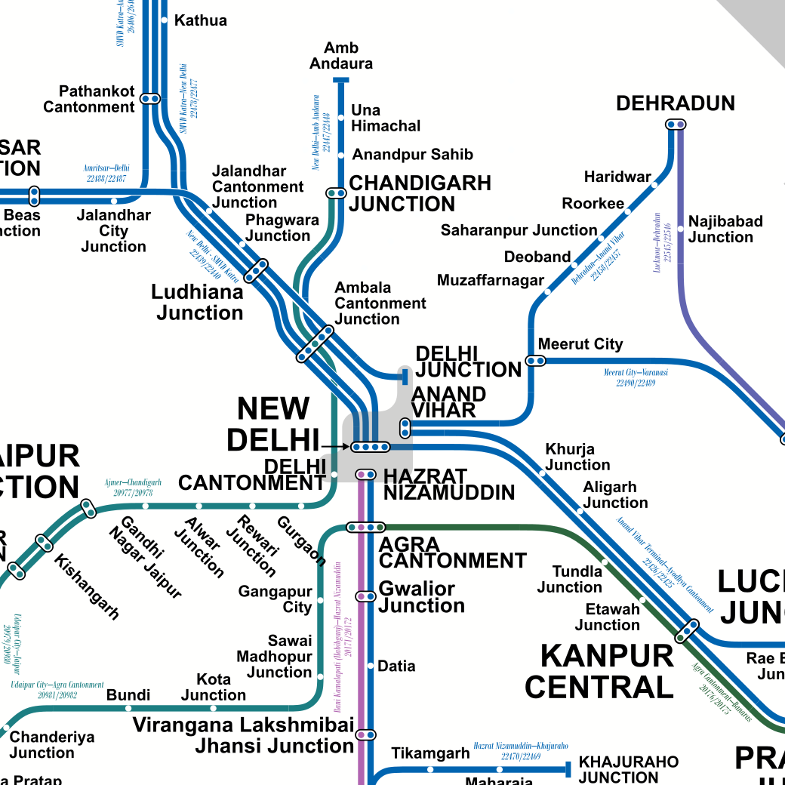
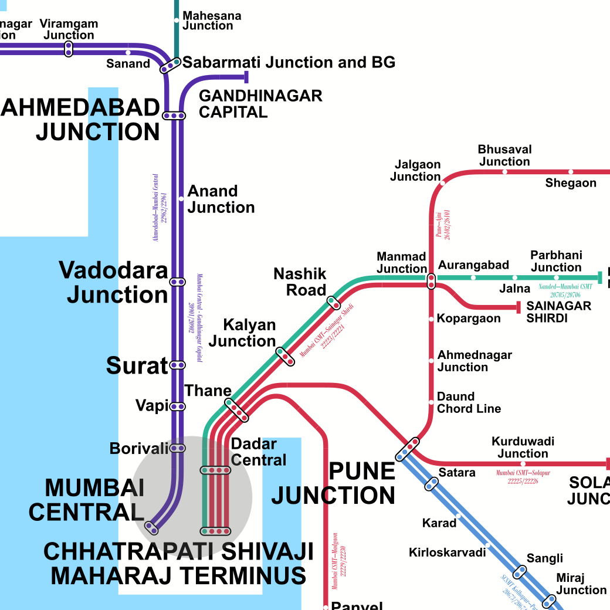
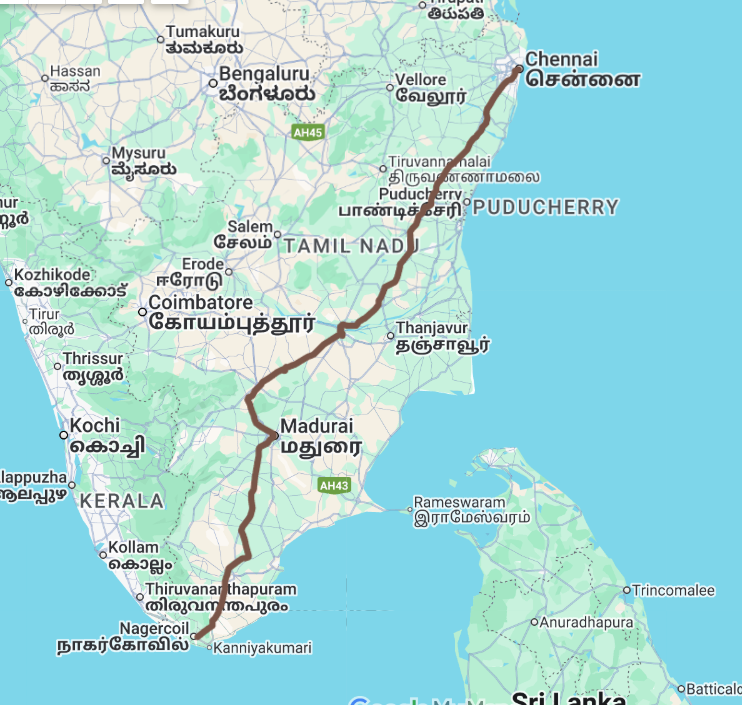
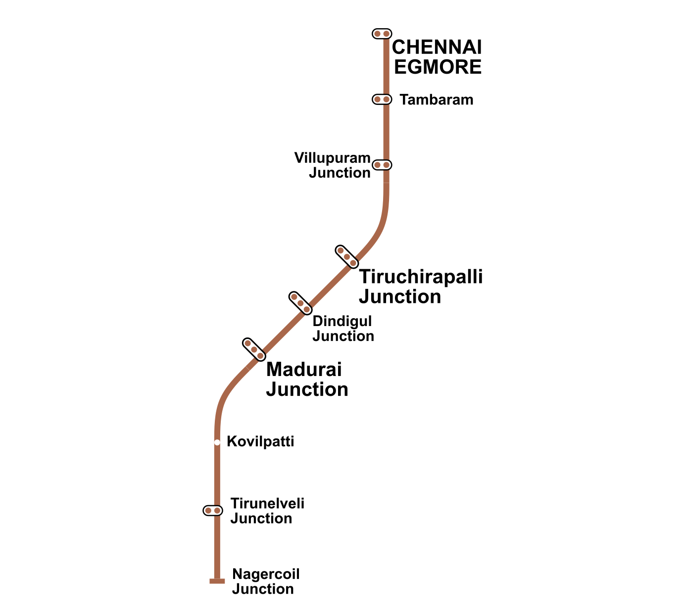

SCHEMATIC MAP OF VANDE BHARAT EXPRESS SERVICES
MAP BREAKDOWN

-All the Vande Bharat Express Service has been colour coded according to their zonal operators
-Service Name and Train Number are provided along the line

Mumbai has the most stations serving Vande Bharat at 6 if not counting Panvel in Navi Mumbai.
Kolkata holds the record for the most Vande Bharat Express services operating from 1 station with Howrah Junction.

Delhi holds the record of the second most Vande Bharat stations with 5.

Chennai is served by 3 stations if Tambaram is counted.

Bengaluru shares the record of the second most stations of 5 with Delhi.
Hyderabad is served only by 2 stations even though the city has 6 major railway junctions.

Delhi and Northern Railway Inset

Mumbai and western Railway Inset


-The geographical route was identified using Google Maps.
-The stations were equally placed alone the lines